Cutting tools can be created anytime before during or after your create a toolpath. We have an extensive guide just on cutting tools called The Cutting Tools Workbook that not only teaches you about cutting tools but also provides worksheets for documenting the parameters you will need from your existing tool bin to create those tools in RhinoCAM.
To create a cutting tool:
1. To the left of the Program tab, select the Tools Machining Objects icon to make sure the Machining Objects Browser is displayed.
|

2.Select the Tools tab from the Machining Objects Browser.
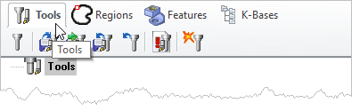 |
3. Select the Create/Edit Tools icon (first icon on the left) to display the Create/Select Tool dialog.
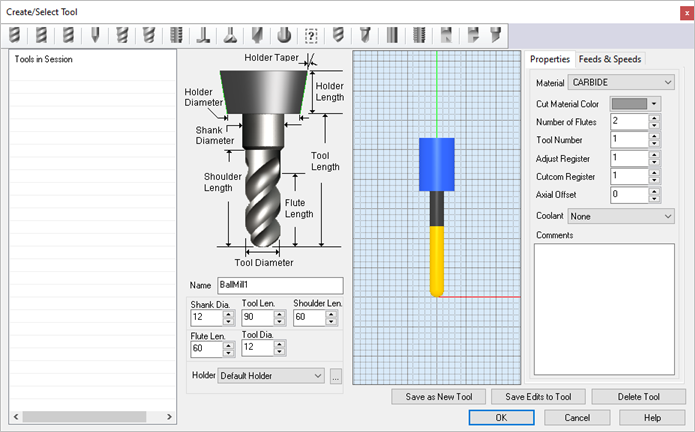 |
4.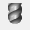 The top toolbar lists the supported cutting tools. Select the icon of the tool type you want to create. The dialog will populate with the Tool type's parameters. For this example we select the Ball Mill tool icon.
5.Edit the Name field to label your tool with a unique identifying name. Tools are stored by their name.
6.Edit the dimension fields to define the tool's physical characteristics including the tool holder, such as diameter length, etc. A preview of the tool will display in the dialog.
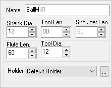 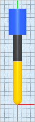 |
7.Move to the right side of the dialog and select the Properties tab.
8.Here, make selections and enter values to define the tool's properties. Tool Material, Number of Flutes, Tool Number, etc. are defined here.
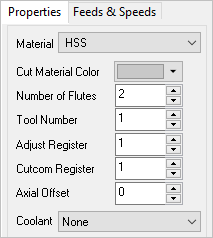 |
9.Coolant type can be assigned to each tool also.
10.If you want a comment to be posted in the G-Code file when the tool is used, enter it in the Comments field.
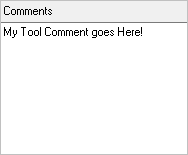 |
11.Now select the Feeds & Speeds tab. Here you can assign all of the Spindle Parameters and Feed Rates that you want this tool to use.
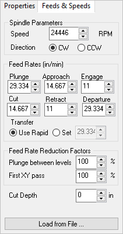 |
12.If you are unsure what values to use, you can select the Load from File button to display the Feeds and Speeds Calculator dialog.
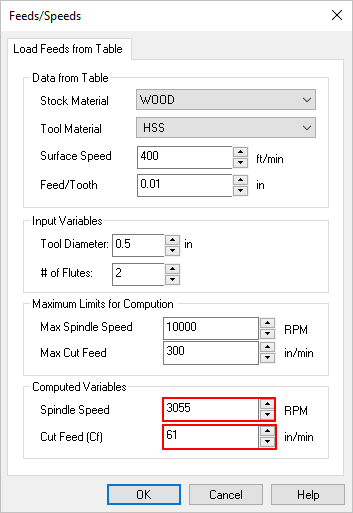 |
13.From here you will see that information about the Tool and Stock material are displayed. See How to Assign a Stock Material for more information.
14.This dialog is a reference calculator that you can use to suggest spindle speed and cut feed rates based on multiple parameters and variables. You will notice that changing parameters and input variables in this dialog will update the Computed Variables section at the bottom of the dialog including Spindle Speed and Cut Feed.
NOTE: This dialog is only used as a reference to calculate a suggested value for Spindle Speed and Cut Feed. ALWAYS use values for these two parameters that are within recommendations suggested by your machine tool vendor and your first-hand experience with YOUR machine.
15.Pick OK when these two parameter values are to your liking for this tool.
16.You will notice that the values for these two parameter values Spindle Speed and Cut Feed are then fed into the Feeds & Speeds tab of the Create/Edit Tool dialog.
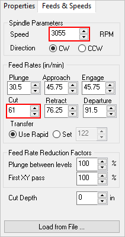 |
17.You will also see that a percentages of the Cut Feed is used to populate the other Feed Rate value in the Feed Rates section. These percentages can be defined in the Feeds & Speeds section of the CAM Preferences dialog.
18.You can also adjust the Feed Rate Reduction Factors if desired.
19.When you are satisfied with your tool parameters, select the Save as New Tool button. The new tool will be listed in the Tools in Session list on the left side of the dialog.
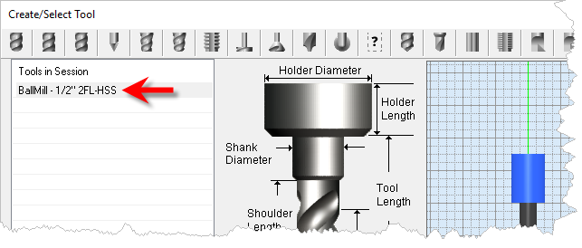 |
20.If you make changes after saving the tool be sure to select the Save Edits to Tool button to save your changes.
21.Now pick OK to close the dialog. You will see that the tool is then listed in the Tools tab list of tools.
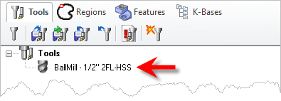 |
22.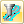 If you do not see your tool listed make sure the icon to List only tools used in machining operations located at the bottom of the tools list is NOT enabled.
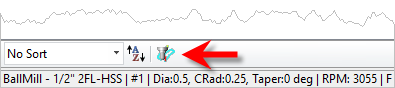 |
23.You can also create a tool from the Tools tab of each of the different toolpath operation dialogs. From the Tools tab, just select the Edit/Create/Select Tool ... button to display the Create/Select Tool dialog again.